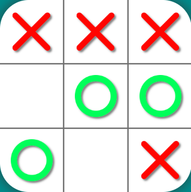

Publish Date: January 14, 2024
Status: Canceled
Publish Date: January 14, 2024
Status: Canceled
Publish Date: January 22, 2024
Status: In Development/Abandoned

Publish Date: March 30, 2024
Status: Supported